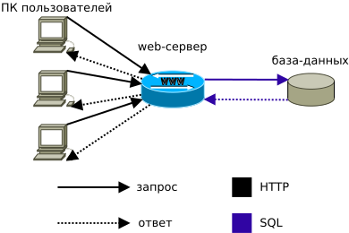
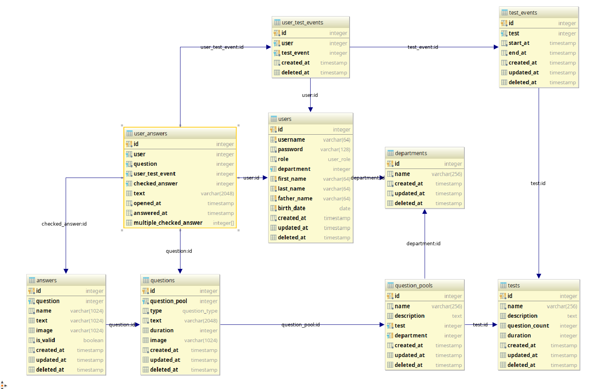

Сибирский государственный университет науки и технологий имени академика М.Ф. Решетнева
Разработал:
студент гр. 0901-51 Петряев К.Ю.
Руководитель:
доц., канд. техн. наук Окладников С.М.
Необходимо было создать web-систему для тестирования госслужащих, удовлетворяющую следующим базовым требованиям:
Разработать информационную системы, позволяющую производить тестирование госслужащих, обработку результатов тестирования, а так же предоставление отчетов по результатам в удобной для восприятия форме.
На слайде приведено определение "тест"'а. Собственно тестирование является процессом проверки навыков и знаний посредством теста. Как следует из определения, приведенном на слайде, при разработке системы необходимо было предоставить возможность формализации заданий (создание вопросов с четкими вариантами ответов), а так же предоставить возможность получения формальной оценки знаний и навыков испытуемого, с помощью автоматической сверки ответов пользователя с правильными.
Тест - система формализованных заданий, по результатам выполнения которых можно судить об уровне развития определённых качеств испытуемого, а также о его знаниях, умениях и навыках.
В силу необходимых временных затрат, а так же других особенностей каджого из вариантов, был выбран электронный способ тестирования испытуемых.
Результат сравнения представлен в таблице 1 раздаточного материала. Результатом сравнения стало понимание, что да
Проведен аналих следующих аналогов: Google Forms, Form Designer, Testograf, Typeform. Основные критерии:
Для реализации была выбрана 3-х звеньевая архитектура.
Функции Клиента: Отображение данных, Обработка пользовательского ввода, Отправка HTTP-запросов к серверной части
Функции Сервера: Проверка аутентификации пользователя, Проверка прав доступа пользователя, Перевод HTTP-запросов клиента в SQL-запросы базы данных, Перевод результата SQL-запроса в HTTP-ответ для клиента, Отправка запросов серверной части.
Функции Базы данных: Обеспечение персистентности данных, Обеспечение консистентности данных, Предоставление доступа к данным
Упрощенная архитектура системы изображена на приведенном слайде. Так же ее можно увидеть на рисунке 1 раздаточного материала.

Масштабирование возможно на уровне web-сервера, так и на уровне базы данных.
Web-сервер может представлять из себя несколько физических машин, соуществляющих параллельную обработку запросов. Для улучшения накладных расходов по памяти и процессорному времени используется серверная платформа Node.js. Ее приемуществом перед традиционными для web средствами типа PHP, Perl, Ruby, Python является использование асинхронного рантайма для обработки запросов.
Схема базы данных приведена на слайде. Большое количество ограничений, указанных на уровне базы данных позволяет уменьшить реализацию серверной части, сильно уменьшить влияние возможных race condition, а так же гарантировать целостность и консистентность данных в системе.

Клиентская часть программно представляет из себя Single Page Application. Приложение написанно с использованием фреймворка Angular. Использование SPA позволяет уменьшить объем трафика от серверной части до клиентской, а так же снизить нагрузку на обе части приложения.
Для графической части интерфейса используется библиотека компонентов Angular-Material. Данная библиотека хорошо проработана как с точки зрения семантики интерфейса, так и с точки зрения удобства использования с клавиатуры, touch-устройств. На слайде приведены различные части полученного интерфейса.
Административная часть интерфейса является так называемым CRUD приложением. Create Read Update Delete. Все списки сущностей решено представить в виде таблиц. Для удобства поиска существует полтотекстовая фильтрация по полям, а так же сортировка.
Для создания и изменения используются различные формы. Наиболее интересными с точки зрения сложности являются форма изменения пользователя, а так же форма изменения/создания вопроса.
Форма работы с вопросом позволяет выбирать тип вопроса, добавлять или удалять различные варианты ответов, отмечать варианты как верные, а так же погружать различные изображения к вопросу и ответам.
Одной из самых значимых для конечного заказчика вещей в приложении является возможность просмотра результата. На слайде представлен общий отчет о результате тестирования группы пользователей по факту завершения события тестирования. Таблица поддерживает сортировку, для удобства считывания данных. Для увеличения скорости работы с интерфейсом, используется графическое представлнение процента правильных ответов.